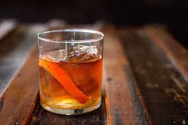

Old Fashioned Cocktail Recipe

Description:
A traditional whisky cocktail with bitters, soda water and a simple orange garnish.
Serve this old fashioned cocktail in a tumbler with plenty of ice.
Ingredients List:
- 2 tsp Sugar
- 1-2 dash Bitters
- Splash of Water
- 60ml Jameson Black Barrel Whiskey
- Soda Water
- Orange
- Maraschino Cherry
Steps:
- Put the sugar, bitters and water in a small tumbler.
- Mix until the sugar dissolves if using granulated.
- Fill your glass with ice and stir in the Jameson Black Barrel Irish Whiskey.
- Add a splash of soda water if you like and mix.
- Garnish with the orange and cherry.